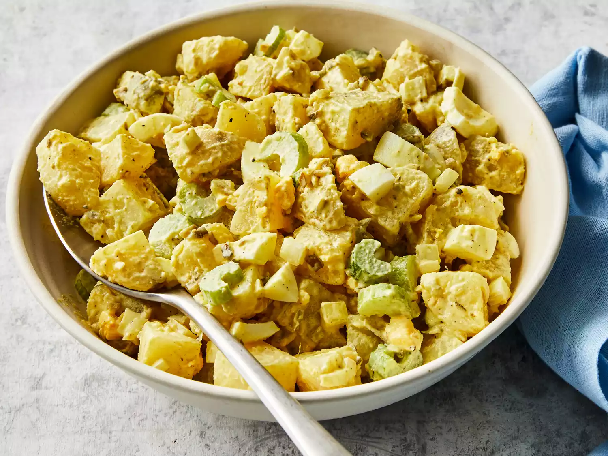

Old-Fashioned Potato Salad Recipe
Back to the menu
Source: Old-Fashioned Potato Salad

This salad will be so easy to make using everyday ingredients!
Most of the work that goes into making this potato salad recipe is preparing the ingredients. After that, you simply combine them gently in a large bowl, cover, and chill to let the flavors develop.
Ingredients
- 5 potatoes
- 3 eggs
- 1 cup chopped celery
- 1/2 cup chopped onion
- 1/2 cup sweet pickle relish
- 1/4 cup mayonnaise
- 1 tablespoon prepared mustard
- 1/4 teaspoon garlic salt
- 1/4 teaspoon celery salt
- ground black pepper to taste
Steps
- Gather all ingredients.
- Bring a large pot of salted water to a boil. Add potatoes and cook until tender but still firm, about 15 minutes.
- Drain, cool, peel, and chop potatoes.
- While potatoes cook, place eggs in a saucepan and cover with cold water. Bring water to a boil; cover, remove from heat, and let eggs stand in hot water for 10 to 12 minutes.
- Remove from hot water, cool, peel, and chop eggs.
- Combine the potatoes, eggs, celery, onion, relish, mayonnaise, mustard, garlic salt, celery salt, and pepper in a large bowl. Mix together well and refrigerate until chilled.
- Enjoy!